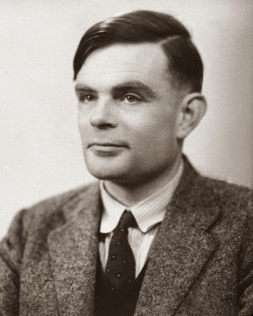

Biografías
Alan Turing
- Nacimiento: 23 de junio de 1912
- Nacionalidad: Británico
- Fallecimiento: 7 de junio de 1954
Alan Turing nació en Londres, Reino Unido, en 1912, es hijo de una familia acomodada. La época que vivió Turing fue
marcada por las dos guerras mundiales, en la que en varias ocasiones, por las acciones de una única persona,
se definió el futuro de la humanidad y la historia que hoy se lee en los libros. Turing es una de estas
personas que definió el rumbo de la historia, pues el mundo en que viviríamos sería totalmente distinto de
no ser por él.
El principal logro de este personaje fue crear una máquina capaz de descifrar el código Enigma, a través del
cual el ejército nazi comunicaba sus planes y por el cual el ejército aliado se encontraba en jaque a punto de
perder la Segunda Guerra Mundial. Fue gracias a esta invención que la duración de la guerra se redujo varios años,
y muy probablemente la que le dio la ventaja que los aliados necesitaban para ganarla.
A pesar de lo anterior, el pensamiento y forma de ser de Turing, se vieron marcados por una falta de comprensión
por parte de las demás personas que lo consideraban extraño y engreído, además de ser perseguido por su orientación
sexual, que se consideraba como un crímen de indecencia para ese momento.
Katherine Johnson

- Nacimiento: 26 de agosto de 1918
- Nacionalidad: Estadounidense
- Fallecimiento: 24 de febrero de 2020
Katherine Johnson es una de las mujeres más destacadas en la historia de la matemática y la ingeniería,
nació en White Sulphur Springs, West Virginia, EE.UU., en el año 1918. Su capacidad de aprendizaje era
extremadamente veloz, lo que le permitió entrar a una universidad para gente de color una muy temprana
edad. La habilidad con las matemáticas la llevó a trabajar en la actual NASA como computadora, y no tardó
mucho en llamar la atención de uno de los directores de la misión que quería llevar al primer hombre al
espacio, gracias a lo que empezó a trabajar de la mano de los más brillantes ingenieros de esa agencia.
Este nuevo paso representó un desafío para Johnson, no porque los cálculos fueran difíciles, sino por su
condición de mujer de color, pues ella no estaba acostumbrada a hacer, e incluso supervisar, el mismo trabajo
que solo hacían hombres blancos, y pasaba lo mismo con sus compañeros, pues ellos tampoco estaban acostumbrados
a esa situación.
Los cálculos de Katherine, sin embargo, fueron fundamentales para la realización de esta misión, llevándola
a participar en otros proyectos de exploración espacial, como el proyecto Apolo, para los que también resultó
indispensable.
Tim Berners-Lee

- Nacimiento: 8 de junio de 1955
- Nacionalidad: Británico
Tim Berners-Lee nació en 1955 en Londres, Reino Unido. Estudió y se licenció en física en la universidad de
Oxford. Habiendo obtenido este título y siendo hijo de científicos, no le costó llegar pronto a trabajar en
el CERN, centro donde se estudia la física de las partículas, y que hoy se dedica a la investigación nuclear.
Allí nació, a finales de los 80' e inicios de los 90' su idea de crear un programa que pudiera crear asociaciones entre diferentes computadoras, y que así
pudieran intercambiar información entre ellas.
Fue así como Berners-Lee empezó a definir el esquema más básico de lo que hoy conocemos como el Internet. Siendo
él el que escribió y definió el HTML para dar estructura a las páginas, las URL para dar una ubicación a una computadora,
y el HTTPS para que entre ellas se pudieran transmitir toda la información. Este proyecto tuvo como nombre
la World Wide Web, y es lo que hoy en día permite a todos los seres humanos estar interconectados, independientemente
del lugar donde se encuentren.
Berners-Lee ha recibicdo numerosos premios por su invención, y hoy en día sigue activo y dedicado a mejorarla
junto a gigantes de la tecnología, desde el World Wide Web Consortium, la organización que crea normas técnicas
para la navegación por Internet.